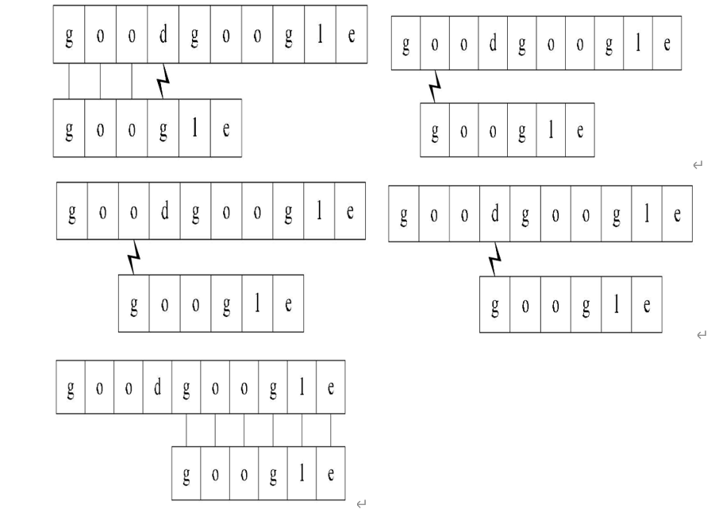
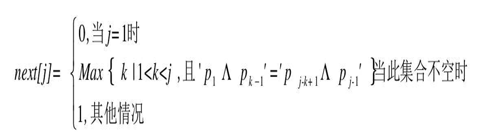

串（string）是由零个或多个字符组成的有限序列，又名叫字符串。
子串与主串，串中任意个数的连续字符组成的子序列称为该串的子串，相应地，包含子串的串称为主串。
子串在主串中的位置是指子串在主串中第一个字符出现的位置。如果主串中不存在与子串相同的子串，则子串在主串中的位置为0。
1.串的大小比较:（1）逐字符比较：从左到右逐字符比较两个字符串，直到找到第一个不同的字符。比较这些字符的 ASCII 值来确定大小。如“cc”大于“abc”；
(2)前缀和长度比较：如果所有比较的字符都相同，则较短的字符串小于较长的字符串。如“cc”小于“cca”；
代码实现：
int strCompare(const char* s, const char* t) {
int n = 0, m = 0;
// 比较字符并计算长度
while (s[n] != '\0' && t[m] != '\0') {
if (s[n] < t[m]) {
return -1;
} else if (s[n] > t[m]) {
return 1;
}
n++;
m++;
}
// 如果一个字符串结束了，检查长度
if (s[n] == '\0' && t[m] == '\0') {
return 0;
} else if (s[n] == '\0') {
return -1;
} else {
return 1;
}
}
2.简单模式匹配算法:

对主串的每一个字符作为子串开头，与要匹配的字符串进行匹配。对主串做大循环，每个字符开头做T的长度的小循环，直到匹配成功或全部遍历完成为止。
代码实现如下：
int Index(string s, string t, int pos) {
if (pos < 0 || pos > strlen(s) - strlen(t))
return -1;
int i = pos - 1;
int j = 0; /* j用于子串T中当前位置下标值 */
while (i < strlen(s) && j < strlen(t)) { //若i小于S长度且j小于T的长度时循环
if (s[i] == t[j]) { /*两字母相等则继续 */
i++;
j++;
} else { /*指针后退重新开始匹配 */
/* i退回到上次匹配首位的下一位 */
i = i - j + 1;
j = 0; /* j退回到子串T的首位 */
}
}
if (j == strlen(t))
return i - j;
else
return -1;
}
3.KMP算法：
KMP算法原理：当一个字符与主串不匹配时，已经匹配成功的部分可以提供信息来避免重复工作。
KMP算法通过构建一个辅助数组，记录模式字符串的前缀信息，帮助在模式字符串中找到一个合理的位置继续匹配，
避免了在匹配失败时重新从头开始匹配，提升了匹配效率。
KMP算法的核心是next数组，next数组的作用是记录模式字符串中，每个位置之前的字符串中，有多大长度的相同前缀后缀。
next数组的计算方法如下：

next[j]的值即为j之前的字符串中，有多大长度的相同前缀后缀。
如：字符串“ababaaaba”
当j=0时，初始化next[0]=-1；
当j=1时，由0到j的串是“a”，没有前缀和后缀，所以next[1]=0；
当j=2时，由0到j的串是“ab”，前缀字符“a“与后缀字符“b”不相等，没有相同的前缀后缀，所以next[2]=0；
当j=3时，由0到j的串是“aba”，前缀字符“a“与后缀字符“a”相同，长度为1，所以next[3]=1；
当j=4时，由0到j的串是“abab”，前缀字符“ab“与后缀字符“ab”相同，长度为2，所以next[4]=2；
当j=5时，由0到j的串是“ababa”，前缀字符“aba“与后缀字符“aba”相同，长度为3，所以next[5]=3；
当j=6时，由0到j的串是“ababaa”，前缀字符“a“与后缀字符“a”相同，所以next[6]=1；
当j=7时，由0到j的串是“ababaaa”，前缀字符“a“与后缀字符“a”相同，所以next[7]=1；
当j=8时，由0到j的串是“ababaaab”，前缀字符“ab“与后缀字符“ab”相同，所以next[8]=2；
所以next数组为：-1，0，0，1，2，3，1，1，2；
总结：前缀字符必包含第一个字符，后缀字符必包含第j个字符，next[j]的值即前缀字符与后缀字符相等时的最大长度加。
代码实现如下：
void Get_next(string T, int* next) {
int i = 0, j = -1;
next[0] = -1; // 初始化 next 数组的第一个值为 -1
while (i < strlen(T) - 1) {
if (j == -1 || T[i] == T[j]) { // 如果 j 为 -1 或当前字符匹配，i 和 j 同时增加
next[++i] = ++j; // 更新 next 数组
} else {
j = next[j]; // 不匹配时，回溯 j
}
}
}
int Index_KMP(string s, string t, int pos) {
int i = pos - 1; // 从 pos 开始的位置，注意调整为 0 基索引
int j = 0; // 模式串的索引
int next[strlen(t)]; // 存储模式串 t 的 next 数组
Get_next(t, next); // 计算模式串 t 的 next 数组
while (i < strlen(s) && j < strlen(t)) { // 遍历主串 s 和模式串 t
if (j == -1 || s[i] == t[j]) { // 如果 j 为 -1 或当前字符匹配，i 和 j 同时增加
j++;
i++;
} else {
j = next[j]; // 不匹配时，回溯 j
}
}
if (j == strlen(t)) // 判断是否匹配成功
return i - strlen(t); // 返回匹配的起始位置
else
return -1; // 匹配失败
}
4.KMP算法的改进：
KMP算法的改进是在next数组的计算上，当模式串中有连续相同的字符时，next数组的值会有重复计算的情况，
这样会导致匹配效率的降低，所以可以对next数组的计算进行改进，
如“aaaax”next数组为：-1，0，1，2，3；
当在x处匹配失败时，下一个字符为第四个a，此时next数组的值为2，但是在第四个a处匹配失败时，下一个字符为第三个a如此重复直到第一个a。
所以可以改进为next数组的值为：-1,-1,-1,-1,3
即由于串的第 二、三、四位置的字符都与首位的“a”相等，那么可以用首位
next的值去取代与它相等的字符后续next[j]的值。
代码实现如下：
void Get_next(string T, int* next)
{
int i = 0, j = -1;
next[0] = -1;// 初始化 next 数组的第一个值为 -1
while (i < strlen(T) - 1)
{
if (j == -1 || T[i] == T[j]) // 如果 j 为 -1 或当前字符匹配，i 和 j 同时增加
{
++i;
++j;
if (T[i] != T[j])
next[i] = j;
else
next[i] = next[j];// 当字符相同时，避免重复计算
}
else {
j = next[j];// 不匹配时，回溯 j
}
}
}